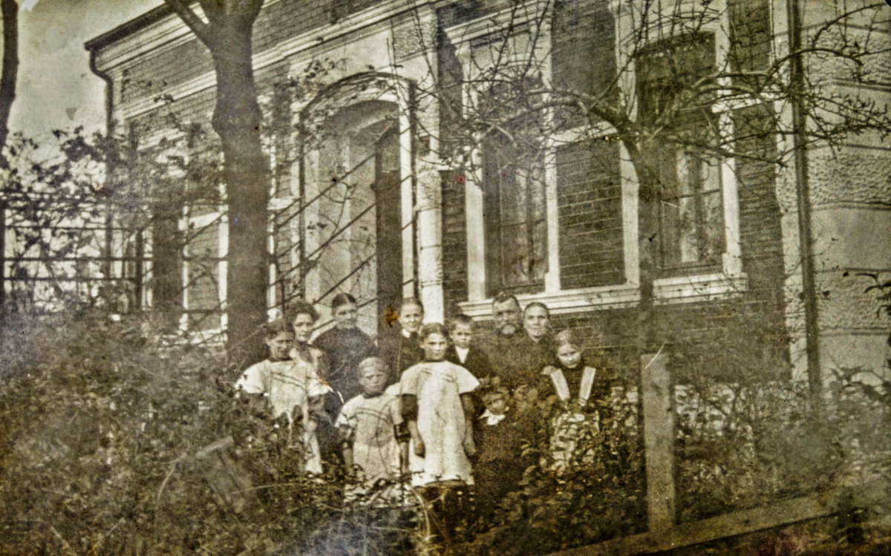
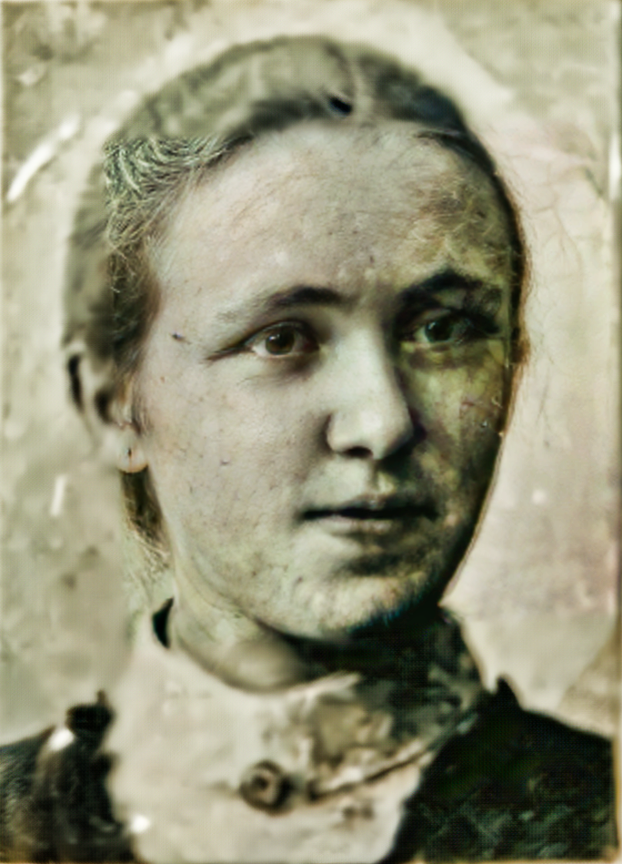
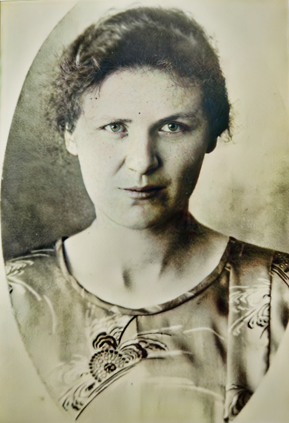

Oma Hamborn
Ich möchte einige kleine Erinnerungen aufschreiben, aus meiner Jugendzeit. Ich weiß, ohne meine Großeltern Knüffermann hätte ich keine so liebevolle Kinderzeit gehabt. Deshalb möchte ich Sie auch noch mal in meine Erinnerung bringen. Damals habe ich es noch nicht so empfunden ich war noch zu klein. Wenn ich heute auf so mancherlei liebe Erinnerungen zurückblicke, weiß ich, dass ich ohne sie so manches entbehrt hätte.

Was in meiner ersten Kindheit zurückliegt, da habe ich ein Bild vor Augen. Und zwar muss es der Umzug zu unserem neuen Haus gewesen sein. In der Biegung bei Hettkamp gingen zwei erwachsene Personen mit einem Wäschekorb vor mir her und ich trippelte hinterher. Das ist alles.
Großeltern Knüffermann
Und dann ist da die böse Erinnerung an Mutters Tod. Genau sehe ich noch, dass Marta (meine kleine Schwester, ich war vier Jahre alt, Marta zwei und Lydia 10 Tage) auf Opas Knie saß, und zwar in der großen Stube im Korbsessel am Kopfende des Tisches. Ich saß neben ihm. Wir waren allein. Dann ging die Tür auf und unser weinender Vater kam herein, setzte sich zu uns und wir weinten alle.

Die böse Tragweite habe ich damals noch nicht erfasst. Erst als ich älter wurde. Ob wir dann wieder zur Seelhorststraße zogen oder ob Oma uns bei sich behielt, das weiß ich nicht mehr. Ich weiß nur, dass Tante Lydia zu Tante Anna kam. (Die Schwester Ihrer Mutter).
Die schönsten Tage des Jahres waren Nikolaus und Weihnachten. Ich sehe uns noch am Tag vor Nikolaus mit einem schwarzen Wachstuch Täschchen, mit etwas Heu und Brotkruste nach Oma ziehen. Am anderen Tag gingen wir erwartungsvoll wieder hin. Auf dem Küchenschrank standen unsere Teller. Hinter dem Teller standen wahre Prachtexemplare von Spekulatius Männern oder Hähne. Dank unserer “süßen Verwandtschaft” in Duisburg (alles Cafebesitzer und Konditoren).
Und ohne Oma wäre das in unserem Leben nur ein Traum geblieben. Durften wir am Nikolaustag mal bei Oma schlafen, dann erlebten wir den gruseligen Augenblick, das Nikolaus mit Viel Gepolter und Getöse zur Haustür hereinkäme. Er rumorte und machte Krach. Dann aber von Oma mit Viel Artigkeit Beteuerungen verabschiedet wurde und wir dann erleichtert einschliefen. Des morgens konnten wir dann nicht schnell genug herunterkommen.
Der Höhepunkt war das Weihnachtsfest. Vater spannte am Spätnachmittag sein Pferd vor der zweirädrigen Milchkarte. Dann ging es durch fußhohen Schlamm zur Seelhorststraße. Zu Fuß wären wir wohl nicht hingekommen. (Ein Fußweg von 10 Minuten) Zumal auch alles stockfinster war.
Weil wir zu Hause keinen Weihnachtsbaum hatten, ich weiß auch nicht, ob es nicht biblisch war oder sogar Götzendienst, mag dahingestellt sein. Auf jeden Fall war der Weihnachtsbaum bei Oma etwas überirdisch Schönes. Er stand vorne im Zimmer, welches nur bei besonderen Anlässen benutzt wurde und die ganze Luft und Eigenart dieses Zimmers hatte auch etwas Besonderes. Ich weiß noch, dass im Baum Rotkäppchen und der Wolf hing. Ebenso ein Stiefel, ein Körbchen mit Inhalt und verschnörkelte Kugeln. Oma hatte immer was Praktisches ausgesucht.
Ich sehe noch, während des Singens erhob Opa sich, nestelte in seiner Hosentasche und machte sich an unseren Tellern zu schaffen. Nachher fanden wir bei näherer Untersuchung unserer Teller, dann fein in weißes Papier eingewickelt, ein Goldstückchen. Es kam, wie es richtig war, zur Sparkasse und als wir es hätten brauchen können, hatte die Inflation alles verschluckt. Sehr schön war auch immer das Osterfest. Des Nachmittags ging es zur Seelhorststraße zum Eier suchen. Zu Hause gab es auch das nicht. Die sehr braunen, mit viel Zwiebelschalen gefärbten Eier waren gut versteckt. Wir fanden sie in allerlei Gesträuch. vor allem Buchsbaumeinfassung der Gartenbeete, in Johannisbeer- und Stachelbeersträuchern. Gelegentlich auch in Baum Verästelungen und Zweigen. Ganz verstand ich das nicht, von wegen Osterhase. Dann mussten die Ostereier verzehrt werden, nach Opa's Ansicht, ehe die Sonne unter ging. Und dann kam für mich das Schlimmste, den ganzen Tag hatte ich schon mit Angst daran gedacht. Onkel Bernhard's ganzer Stolz. ein übergroßes Osterfeuer wurde angesteckt. Ich hatte doch solche Angst vor Feuer. Wenn es eben anging, blieb ich mit irgendeinem Vorwand im Haus und besah mir das schaurig schöne Bild vom Fenster der besten Stube aus an. An einem Osterfest besinne ich mich genau. Ich war mit draußen im Garten. Das Feuer besonders groß und "gefährlich". Dazu blieben auf der Straße ein paar Männer stehen. Sehen konnte ich sie nicht, aber hören. Und zwar sangen sie: „Moder ach Moder, us Kräh ist dot, is von Nach vont Stöcksgen gefallen, hätt gebroken sin linke poot, Moder ach Moder, us Kräh ist dot.“- Das war zu viel für mich, ich renne zum Haus, will das große Eisenstangen Kettentor aufmachen. Da läuft das Pferd auf dem Hof. Der Stall war wohl nicht richtig zugemacht worden. Es hatte sich selbstständig gemacht. Ich weiß, dass auf mein Gebrüll alles herbei gestürzt kam, wie es weiterging, weiß ich nicht mehr. Auch unsere Kirchhofs Gänge mit Oma sind noch in meiner Erinnerung. Wir spazierten los. Am Mattlerbusch vorbei ging es noch nicht. Aber dann kam die alte unheimliche Ziegelei. An Schulte-Mattlersgarten die hohe Hecke. Und nur der schmale Fußweg. Dann wurde unsere Hand fester gehalten und dann ging es so schnell wie möglich an dieser "gefährlichen" Stelle vorbei. Heute, wenn ich die schöne breite Straße sehe, denke ich noch oft daran. Wenn wir uns dem Friedhof näherten, dann ging Oma's erster Blick zum großen Engel, der am Eingang auf der Gruft eines großen Bauern stand. Wie oft war ein Arm abgeschlagen. Wie konnte sie sich dann über die Verbrecher aufregen und schimpfen. Ehe wir wieder vom Friedhof gingen, mussten wir erst zur geheimnisvollen Zwergengruft. Auch sie steht heute noch. Oma war immer ängstlich. Wir wurden auch immer vor dem Heckengang neben Omas Garten gewarnt. Und der war zu schön zum Verstecken- und Fangenspielen. Als Onkel Bernhard Soldat war, wurden wir auch eines Sonntags mit nach Wesel genommen. Es war wohl Besuchstag. Ich weiß noch, dass unsere langen wallenden Haare sehr bewundert wurden. "Germanisch blond" waren sie wohl!!!
Schön war auch die Zeit, wenn die Kartoffeln ausgemacht wurden. Ich weiß nun nicht, halfen Oma und Opa bei uns oder zu Hause, oder hatten sie selbst ein Stück gesetzt in unserem großen Garten. Auf jeden Fall passten wir auf, wenn Oma und Opa auf dem Aschenweg in Sicht waren. Oma mit einer Kanne und ein schwarzes Tuchtäschchen beladen. Um 4 Uhr war Pause und dann mussten wir mithalten. Schwarz- und Weißbrot mit Apfelkraut. Und den nötigen Kaffee dazu. Ich nehme an, es war "Katreiners Malzkaffee". Aberherrlich. Wir sollten sicher helfen, auflesen. Aber was daraus wurde, weiß ich nicht mehr.
Ich erinnere mich auch noch genau an den großen Nussbaum in Tante Minnas Garten, war das Schön, wenn Oma des morgens, nach einer stürmischen Herbstnacht sagte, fragt doch mal bei Tante Minna, ob ihr Nüsse auflesen dürft. Bei Tante Minna durften wir. Ich liebe bis heute die stürmischen Herbsttage. Und dann dürfen auch nicht die dicken gelben Eierpflaumen in Oma's Garten vergessen werden. Ich denke oft, ich habe nie wieder so schöne und leckere gesehen. Es fiel immer ein Korb voll für uns ab. Oma hatte ein Deckelkörbchen und das kannten wir schon. Dann war noch was. Der Paradiesapfelbaum auf dem Hof. Ich habe wunderbar rote Äpfel in Erinnerung. Höhepunkte waren immer die Besuchstage aus Duisburg. Wussten wir Duisburg doch, dass leckere Sachen mitkamen, besonders auch für uns Kinder. Dann standen wir des Morgens und hielten Ausschau. Unsere Blicke gingen zur Mattlers Wiese. Zwischendurch erschien Oma immer wieder an der Haustür mit der Frage: "kommen sie noch nicht?“ Aber jedes Warten wird belohnt. Ich weiß noch, Onkel Gerhard beglückte uns immer mit Bonbons. Und einmal bekam Klein - Lydia eins in den Hals. Es war eine Aufregung. Von da an durfte er nur noch liebes Perlen mitbringen. Wenn ich so meine Erinnerungen aufschreibe, muss ich sagen, wir waren doch oft bei Oma. Besonders des Sonntags. Wann wir unsere zweite und dritte Mutter bekamen, zu welcher Zeit ich zur Schule kam, wann Tante Berta kam, das kann ich nicht der Reihe nach in meinem Gedächtnis einordnen.
Das Essen des Sonntags war auf jeden Fall eine besondere Angelegenheit. Es ging auch alles seinen gesitteten Gang. Zu keiner Klage Anlass, bis der Pudding kam. Der leckere Stärke- oder Grießpudding mit Himbeersaft. (Reese Pudding gab es wohl noch nicht). Dann wurden uns von Onkel Bernhard oder Gerhard Sachen vorgegaukelt, die drinnen oder draußen herumschwirren sollten. Wir entdeckten mit dem besten Willen nichts. Wollten wir dann voller Behagen unseren Pudding essen, war natürlich nichts mehr da. Das Quengeln dauerte so lange, bis Oma Einhalt gebot und schimpfte und plötzlich stand er wieder da, Klug wurden wir nie daraus, immer dasselbe.
Einmal erinnere ich mich, es war wohl ein besonderer Anlass, Oma und Tante Anna hatten einen besonders guten Pudding gekocht und in der Löwenform geschüttet. (Elisabeth Allendorf ist glaube ich im Besitz des guten Stückes). Gegen Mittag kam die aufregende Angelegenheit des Stürzens. Und o Schreck, der Löwe lief auseinander wie Suppe.
Und dann erinnere ich mich genau, dass Tante Berta uns wunderschöne Kleider und Schürzen nähte, Kleider mit Rüschen, Volants und Borden. Des Sonntags stolzieren wir dann in unserem Staat und offenen Haaren stolz umher.
Und dann kam auch eines Tages Klein - Gerhard, (später Wiesbaden) Wir waren da schon größer, dass wir auf der Stillen Seelhorststraße bei schönem Wetter den Kinderwagen fahren durften. Ich glaube, es war ein blauer. Aber alle Herrlichkeit nimmt einmal ein Ende. Und so ging es auch uns. Wir hörten Sprechen und munkeln von Duisburg. einem großen Haus usw. Ich wollte es nicht wahrhaben. Und doch war es so. Die ganze Herrlichkeit zog nach Duisburg. (Damals eine Tagesreise) Aber man kann ja einen alten Baum schlecht verpflanzen. Und so ging es auch Oma. Sie hielt es nicht aus. Sie kam wieder zurück. Und davon kann Lydia besser erzählen. Ich war wohl durch Schule und was es alles zu Hause gab, abgehalten. Aber Opa führ doch öfter nach Duisburg - Hochfeld und Lydia musste dann bei Oma schlafen. Wenn sie die Prozedur glücklich hinter sich hatten, Haustür, Kellertür, Küchentür und zum Schluss zum kleinen Ställchen zweimal nachsehen, ob alles gut verschlossen war, oben unter Betten und Ecken gesehen hatten, dann legten sie sich beruhigt hin. Es dauerte aber nicht lange. Oma: "lidiäken, häs do wat gehört?" “Nein!” Oma: “Ick wohl, komm wei kieken noch es nor.” (Ich wohl, komm wir sehen nochmal nach) Und alles ging von neuem los, Mittlerweile wurde es spät.
Es war ein anderes mal. Opa war ja im Kriegerverein. Es war Oma wohl ein Dorn im Auge. Sie hat wohl so lange gestänkert und gemeckert, bis Opa los ging, um sich abzumelden. Aber das war ihr wohl auch wieder nicht recht. Er war bis zur nächsten Ecke gekommen, dann rief sie hinterher. "Gerd”, und weil Gerd noch nicht hörte oder nicht hören wollte, das zweite mal: “Gerd denk dran, wenn do stervs, weden kinne Salven öwer din Graf geschoten.” ( Gerd denk dran, wenn du stirbst, werden keine Salven über dein Grab geschossen). Was daraus wurde, weiß ich nicht, ich glaube, Opa ging weiter.
Im 1. Weltkrieg hat Opa noch Milch gefahren. Vater war im Krieg und Opa schon älter. Was hat er sich oft ärgern müssen über “die liebe Tante Ida" (die neue Mutter). Aber Opa kam im Sommer wie im Winter. Er musste draußen warten, bis "Mutter Ida" ihre Predigt beendet hatte. Und dann weiß ich noch von einer Begebenheiten. Es war für Oma und Opa kein Zustand mehr, alleine auf der Seelhorststraße. Und sie zogen wieder nach Duisburg - Hochfeld. Die Möbel waren aufgeladen. Es ging damals noch mit Pferd und Wagen. Oma, Onkel Gerhard und ein Karton standen noch in der leeren Wohnung. Und das ging per Straßenbahn. Und wie Lydia erzählte, war in dem Karton ein Katze für Tante Anna in Hochfeld gedacht. Oma zu Lydia: “Irk heff die Katt en Schöttelken Rißpapp drin gesatt". (Ich haber der Katze ein Schüsselchen Reisbrei drin gesetzt). Alles war gut, sie stehen noch ein bisschen. Auf einmal in dem Karton ein furchtbares Rumoren, alles ist in Bewegung, der Karton geht auf, die "katt" springt heraus und die "Reispapp" spritzt in der Umgebung herum. Onkel Gerhard war starr, hat geschimpft, Moder, Moder wenn us datt in die Strotenbahn passiert wär.
Auch Vater erzählte schon mal was, unter anderem aus seiner Bräutigam Zeit. Wenn er zu seinen Schwiegereltern kam, saß da auch meine Uroma Heix. Sie war ja bekanntlich in ihrem Alter blind. und wie mir erzählt wurde, war sie auch meine Patentante. Die Uroma strickte und strickte Strümpfe und dann fragte sie zwischendurch: “Jetta, ös et jetz lang genug?” Oma darauf: “nee, noch nich.” - Uroma stöhnte “nee, nee, de heffen ok all so lange Knök.” (Nein, nein, die haben auch alle so lange Knochen) Bekanntlich war meine Mutter eine Ansichtskartensammlerin. Ich habe noch verschiedene, ganz interessante. Auf einer Karte wird ihr aus Beek (max 10 km) geschrieben, dass sie wieder gut zu hause angekommen sind. Eine habe ich noch, da sage ich meine "Historische" zu. Ich schreibe sie wörtlich ab.
Geschrieben in Oberhausen den 18.2.1899
Adressiert an Frl. Elisabeth Knüffermann Feldmark Holten
Liebe Schwester Elisabeth. Stehe mit meiner Milchteute (Milchkanne) vor einem Schaufenster, seh eine Ansichtskarte, denk an dein Ansichtskartenalbum, geh herein, kaufe eine und schicke sie dir. Ich denke, dass sie dir Freude machen wird. Es grüßt dir dein Bruder Bernhard.
Auch wurde mir von fremden Leuten Interessantes gesagt. So sagte mir die alte Frau Beekmann (Bäuerin und später Nachbarin in Fahrn) einmal, "Ick heff dine Moder ock gekannt. Die war so nett. So nett bös do nich.
Und eine ganz fremde Frau frug mal, sind sie die Tochter von Knüffermanns Lisa? Als ich es bejahte, erwiderte sie, in ihrem Kleiderschrank hing noch ein Kleid, was sie genäht hätte (Lisa Knüffermann war Schneiderin). Jetzt weiß ich nichts mehr. Nur muss ich noch erwähnen, dass ich dann später, als ich erwachsen war, auch für 3 Jahre in Hochfeld landete. Die Zeit war schön, wenn sie auch unter dem Zeichen der Besatzungsmacht stand. Und wir schon früh hinter verschlossenen Türen und heruntergelassenen Rollläden unsere Abende verbringen mussten. Aber ich habe viel gelernt. Ich konnte noch keinen Kuchen backen. Das hat die liebe Tante Berta mir alles beigebracht, Backen, Kochen putzen, und so gründlich, dass sie selbst auf die Knie ging, wenn sich unter dem Herd Kniest angesammelt hatte. Und vor allem bekam ich eine Ahnung vom Geschäft, was mir später sehr zu statten kam.
Aber eines muss ich noch schreiben. Es war zur Zeit der Sperrstunde. Alle hatten Fahrräder, Tante Berta neu gelernt. An einem schönen Sonntag ging es auf nach Hiesfeld. Tante Berta hatte einen schönen neuen Lederhut auf. Während des Tages kam das Unheil, die Sperrstunde wurde vorverlegt. Die letzte freie Stunde kam, noch kein Haus zu sehen.
In letzter Minute kam die "Kolonie“ (Arbeitersiedlung). Die Zeit reichte nur noch, die Fahrräder herein zu schaffen. Die Tante Berta sank mit Lederhut und Schuhe aufs Sofa. Zu nichts mehr fähig. Nach einiger Zeit konnten wir dann Hut abnehmen und Schuhe ausziehen.
So, jetzt höre ich auf. Ich schrieb ja schon, den Jahren nach bin ich wohl ein bisschen durcheinander gekommen, Hoffentlich erreiche ich eines, dass Ihr Euch über meinen Bericht freut und ich ein bisschen zur Unterhaltung beitrage.
